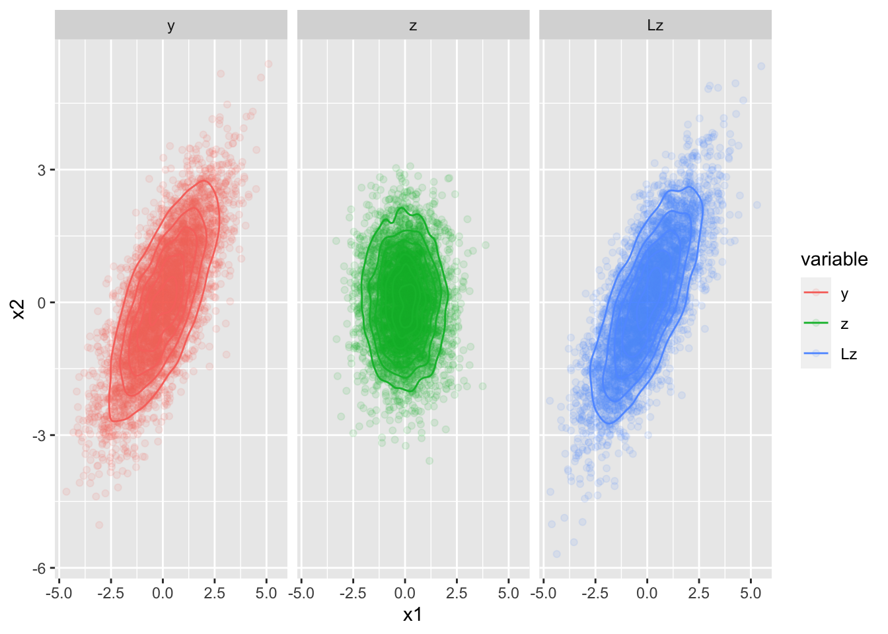

library(tidyverse)
library(dasc2594)
library(mvnfast)
library(MASS)10 Matrix Factorizations
In scalar mathematics, a factorization is an expression that writes a scalar \(a\) as a product of two or more scalars. For example, the scalar 2 has a square-root factorization of \(2 =\sqrt{2} * \sqrt{2}\) and 15 has a prime factorization of \(15 = 3 * 5\). A matrix factorization is a similar concept where a matrix \(\mathbf{A}\) can be represented by a product or two or more matrices (e.g., \(\mathbf{A} = \mathbf{B} \mathbf{C}\)). In data science, matrix factorizations are fundamental to working with data.
10.1 The LU factorization
First, we define lower and upper triangular matrices.
Definition 10.1 The matrix \(\mathbf{A}\) is said to be lower triangular if \[
\begin{aligned}
\mathbf{A} = \begin{pmatrix}
a_{11} & 0 & 0 & \cdots & 0 \\
a_{21} & a_{22} & 0 & \cdots & 0 \\
a_{31} & a_{32} & a_{33} & \cdots & 0 \\
\vdots & \vdots & \vdots & \ddots & \vdots \\
a_{n1} & a_{n2} & a_{n3} & \cdots & a_{nn} \\
\end{pmatrix}
\end{aligned}
\]
Similarly, the matrix \(\mathbf{A}\) is said to be upper triangular if \[
\begin{aligned}
\mathbf{A} = \begin{pmatrix}
a_{11} & a_{12} & a_{13} & \cdots & a_{1n} \\
0 & a_{22} & a_{23} & \cdots & a_{2n} \\
0 & 0 & a_{33} & \cdots & a_{3n} \\
\vdots & \vdots & \vdots & \ddots & \vdots \\
0 & 0 & 0 & \cdots & a_{nn} \\
\end{pmatrix}
\end{aligned}
\]
The LU factorization of a matrix \(\mathbf{A}\) reduces the matrix \(\mathbf{A}\) into two components. The first component \(\mathbf{L}\) is a lower-triangular matrix and the second component \(\mathbf{U}\) is an upper triangular matrix.
Using the LU factorization, the matrix factorization \(\mathbf{A} = \mathbf{L} \mathbf{U}\) can be used in the matrix equation \(\mathbf{A} \mathbf{x} = \mathbf{L} \mathbf{U}\mathbf{x} = \mathbf{b}\) by first solving the sub-equation \(\mathbf{L} \mathbf{y} = \mathbf{b}\) and then solving the second sub-equation \(\mathbf{U} \mathbf{x} = \mathbf{y}\) for \(\mathbf{x}\). Thus, the matrix factorization applied to the matrix equation gives the pair of equations
\[ \begin{aligned} \mathbf{L} \mathbf{y} & = \mathbf{b} \\ \mathbf{U} \mathbf{x} & = \mathbf{y} \end{aligned} \tag{10.1}\]
At first glance, this seems like we are trading the challenge of solving one system of equations \(\mathbf{A}\mathbf{x}\) Equation 5.1 for the two equations in Equation 10.1. However, the computational benefits arise due to the fact that \(\mathbf{L}\) and \(\mathbf{U}\) are triangular matrices and solving matrix equations with triangular matrices is much faster.
Example 10.1 Let \(\mathbf{A} = \begin{pmatrix} 1 & 0 & 2 & -2 \\ -2 & -2 & -4 & 1 \\ -1 & -4 & -8 & 5 \\ -2 & -6 & -4 & 4 \end{pmatrix}\) which has the LU decomposition
\[ \begin{aligned} \mathbf{A} = \begin{pmatrix} 1 & 0 & 2 & -2 \\ -2 & -2 & -4 & 1 \\ -1 & -4 & -8 & 5 \\ -2 & -6 & -4 & 4 \end{pmatrix} = \begin{pmatrix} 1 & 0 & 0 & 0 \\ -2 & -1 & 0 & 0 \\ -1 & -2 & -3 & 0 \\ -2 & -3 & 0 & -3 \end{pmatrix} \begin{pmatrix} 1 & 0 & 2 & -2 \\ 0 & 2 & 0 & 3 \\ 0 & 0 & 2 & -3 \\ 0 & 0 & 0 & -3 \end{pmatrix} \end{aligned} \] and consider the system of equations defined by the matrix equation \(\mathbf{A} \mathbf{x} = \mathbf{b}\) where \(\mathbf{b} = \begin{pmatrix} -5 \\ -7 \\ -2 \\ -14 \end{pmatrix}\).
solve \(\mathbf{L} \mathbf{y} = \mathbf{b}\) using an augmented matrix and RREF.
solve \(\mathbf{U} \mathbf{x} = \mathbf{y}\) using an augmented matrix and RREF.
compare to the solution \(\mathbf{A}\mathbf{x} = \mathbf{b}\) using an augmented matrix and RREF.
in lab: Solve some large systems of equations by brute force which shows how the LU decomposition is faster.
10.1.1 Geometric interpretation of the LU factorization
- Draw image in class – composition of transformations \(T_A(\cdot) = T_L(T_U(\cdot))\)
10.2 Obtaining the LU factorization
Notice that the upper-triangular matrix \(\mathbf{U}\) is in echelon form. Congratulations! you know how to construct a matrix \(\mathbf{U}\) by reducing the matrix \(\mathbf{A}\) to an echelon form \(\mathbf{U}\) using elementary matrices \(\mathbf{E}_1, \ldots \mathbf{E}_k\). Now, we only need to find the lower triangular matrix \(\mathbf{L}\).
Combining the LU factorization and the fact that we can find an upper triangular matrix \(\mathbf{U}\) using elementary row matrices, we have
\[ \begin{aligned} \mathbf{A} & = \mathbf{L} \mathbf{U} \\ \mathbf{E}_k \cdots \mathbf{E}_1 \mathbf{A} & = \mathbf{U}. \end{aligned} \tag{10.2}\] We also know that each of the elementary row matrices \(\mathbf{E}_j\) are invertible (you can always re-swap rows, subtract instead of add rows, etc.) which says that each inverse \(\mathbf{E}_j^{-1}\) exists. Thus, the product \(\mathbf{E}_k \cdots \mathbf{E}_1\) must have an inverse which is \[ \begin{aligned} (\mathbf{E}_k \cdots \mathbf{E}_1)^{-1} & = \mathbf{E}_1^{-1} \cdots \mathbf{E}_k^{-1}. \end{aligned} \] Plugging this inverse into Equation 10.2 gives (left multiplying by \((\mathbf{E}_k \cdots \mathbf{E}_1)^{-1}\) on both sides) \[ \begin{aligned} (\mathbf{E}_k \cdots \mathbf{E}_1)^{-1} (\mathbf{E}_k \cdots \mathbf{E}_1) \mathbf{A} & = (\mathbf{E}_k \cdots \mathbf{E}_1)^{-1}\mathbf{U} \\ \mathbf{A} & = (\mathbf{E}_k \cdots \mathbf{E}_1)^{-1}\mathbf{U} \\ & = \mathbf{L} \mathbf{U} \end{aligned} \] where \(\mathbf{L} = (\mathbf{E}_k \cdots \mathbf{E}_1)^{-1}\)
Algorithm for finding the LU decomposition
Given the matrix \(\mathbf{A}\)
Find elementary matrices \(\mathbf{E}_1, \ldots, \mathbf{E}_k\) such that \(\mathbf{E}_k \cdots \mathbf{E}_1 \mathbf{A}\) is in row echelon form (if this is possible, otherwise an LU factorization does not exist). Call this matrix \(\mathbf{U}\), the upper triangular component of the LU factorization.
The, the lower triangular \(\mathbf{L} = (\mathbf{E}_k \cdots \mathbf{E}_1)^{-1}\).
Notice that the algorithm does not say to find a specific matrix \(\mathbf{U}\). In general, any row echelon form matrix \(\mathbf{U}\) will work.
10.3 The Cholesky factor
A Cholesky decomposition is special type of LU decomposition. A Cholesky decomposition is an LU decomposition on a symmetric, positive-definite square matrix.
Definition 10.2 If a matrix \(\mathbf{A}\) meets the following two conditions, the matrix \(\mathbf{A}\) is said to be symmetric, positive-definite.
- A matrix \(\mathbf{A}\) is said to by symmetric if \(\mathbf{A} = \mathbf{A}'\)
- A \(n \times n\) matrix is said to be positive definite if for all \(\mathbf{x} \in \mathcal{R}^n\), the quadratic form \(\mathbf{x}' \mathbf{A }\mathbf{x} \geq 0\)
Note: the condition of positive definiteness is actually impossible to check. Can you show this is true for all vectors? Luckily, a \(n \times n\) symmetric matrix is positive definite if and only if the matrix \(\mathbf{A}\) is invertible (which we know about by the invertible matrix theorem Theorem 9.5).
Definition 10.3 Let \(\mathbf{A}\) be a symmetric, positive definite matrix (by this, \(\mathbf{A}\) is a \(n \times n\) square matrix). Then \[ \begin{aligned} \mathbf{A} = \mathbf{L} \mathbf{L}' \end{aligned} \] is the Cholesky decomposition of \(\mathbf{A}\) if \(\mathbf{L}\) is a lower-triangular matrix. Also, the lower triangular Cholesky matrix \(\mathbf{L}\) is unique.
What makes the Cholesky factor special?
The decomposition \(\mathbf{A} = \mathbf{L} \mathbf{U}\) has the property that \(\mathbf{U} = \mathbf{L}'\) so that the computer only has to store one of the matrix components (reduce memory demands). As about half of the elements of \(\mathbf{L}\) are 0, matrix multiplication is much less computationally demanding as about half of the flops are not required to be evaluated (x * 0 = 0).
The Cholesky factor is unique. There is only one Cholesky factor for each symmetric positive definite matrix.
The Cholesky has properties related to multivariate normal distributions.
Let \(\mathbf{y} \sim \operatorname{N}(\mathbf{0}, \boldsymbol{\Sigma})\), and \(\boldsymbol{\Sigma} = \mathbf{L} \mathbf{L}'\). Then, if \(\mathbf{z} \sim \operatorname{N}(\mathbf{0}, \mathbf{I})\), then \(\mathbf{L} \mathbf{z} \sim \operatorname{N}(\mathbf{0}, \boldsymbol{\Sigma})\). We say the \(\mathbf{y}\) and \(\mathbf{L}\mathbf{z}\) are equal in distribution.
# simulate N 2-dimensional random normal vectors
N <- 5000
mu <- rep(0, 2)
Sigma <- matrix(c(2, 1.5, 1.5, 2), 2, 2)
y <- rmvn(N, mu, Sigma)
# calculate the Cholesky factor
L <- t(chol(Sigma)) # R calculates the upper (right) Cholesky factor by default
z <- rmvn(N, mu, diag(2))
Lz <- t(L %*% t(z)) # pay attention to the dimensions of L and z here...
data.frame(
observation = 1:N,
x1 = c(y[, 1], z[, 1], Lz[, 1]),
x2 = c(y[, 2], z[, 2], Lz[, 2]),
variable = factor(rep(c("y", "z", "Lz"), each = N), levels = c("y", "z", "Lz"))
) %>%
ggplot(aes(x = x1, y = x2, color = variable)) +
geom_point(alpha = 0.1) +
geom_density2d() +
facet_wrap(~ variable)